Magnetic Storage
- Hard Disk Drive
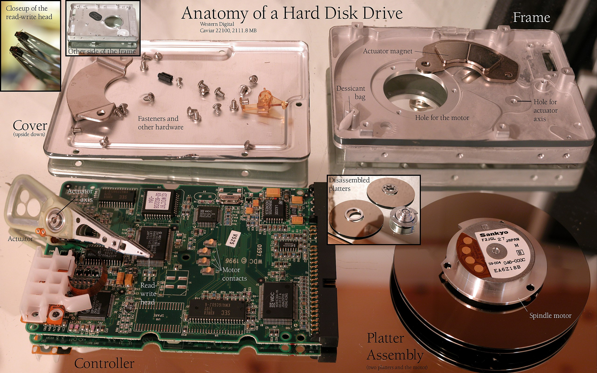
- cassette tape磁带
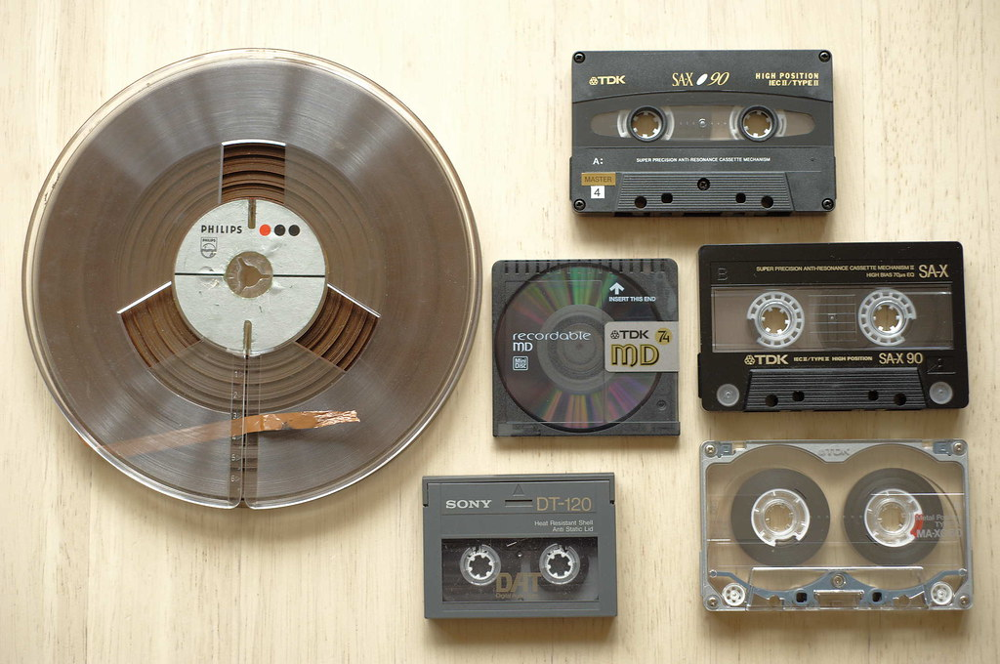
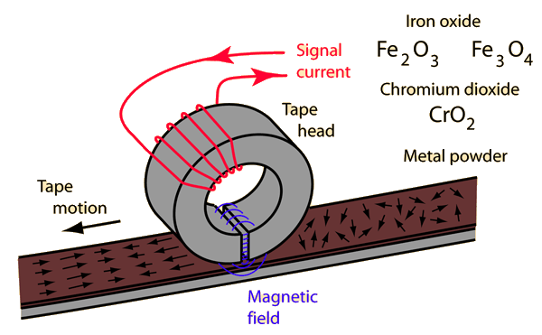
- floppy disk软盘
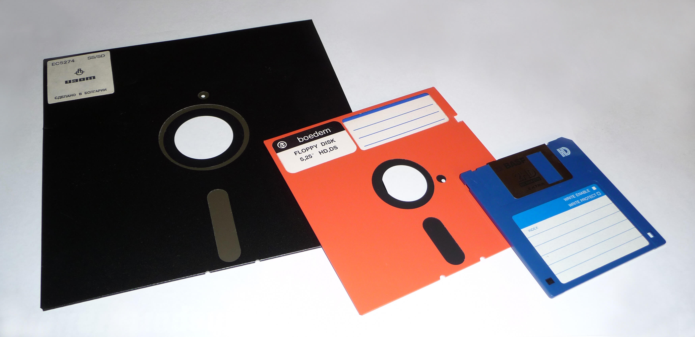
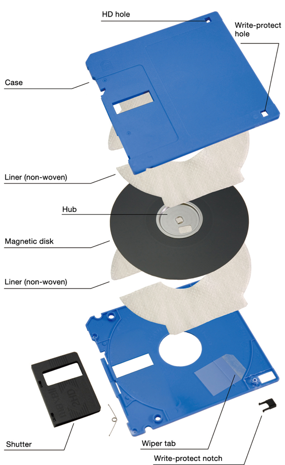
本文主要讨论HDD硬盘驱动器，其他的磁性存储原理均相仿。
物理学原理
1831年法拉第电磁感应定律。
电动势方向，楞次定律：电路上所诱导出的电动势的方向，总是使得它所驱动的电流，会阻碍原先产生它（即电动势）的磁通量之变化。
电生磁方向，安培（右手螺旋）定律，
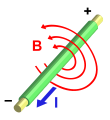
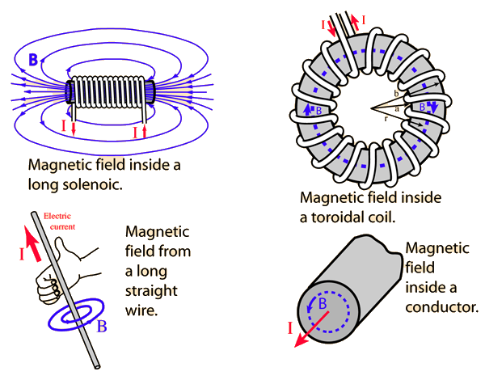
螺线管（或其他方式）产生的磁场能改变磁性材料中的磁畴（magnetic domain）。
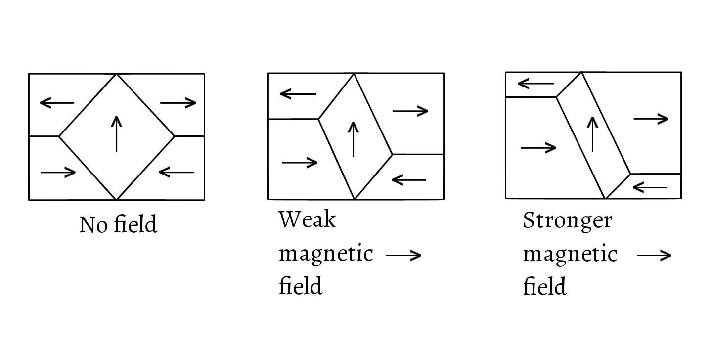
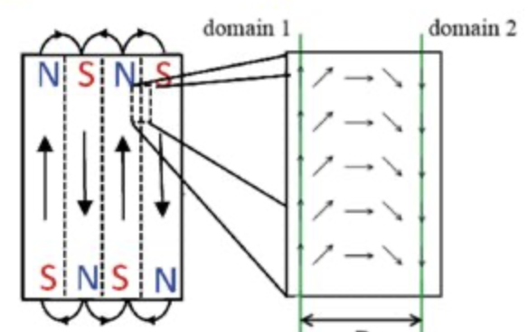
结构
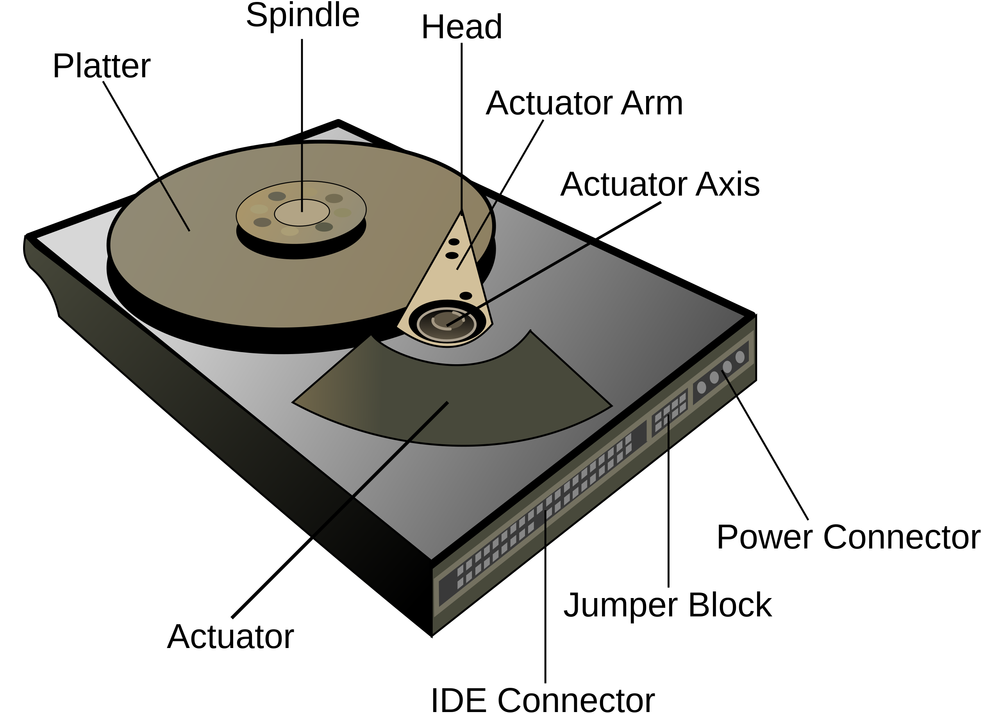
盘片（Platters）
A typical HDD design consists of a spindle that holds flat circular disks, called platters, which hold the recorded data. The platters are made from a non-magnetic material, usually aluminum alloy, glass, or ceramic. They are coated with a shallow layer of magnetic material typically 10–20 nm in depth, with an outer layer of carbon for protection.
A strand of human DNA is 2.5 nanometers in diameter. Most proteins are about 10 nanometers wide, and a typical virus is about 100 nanometers wide. A bacterium is about 1000 nanometers. Human cells, such as red blood cells, are about 10,000 nanometers across. PM2.5 = matter that has a diameter of 2.5 micrometres or smaller.
盘片是用铝合金、玻璃或陶瓷这种非磁性物质制作的，上面会覆盖10～20nm的磁性物质（iron(III) oxide一般用矫顽力大的永磁物质Fe2O3氧化铁），还有一层碳用于保护。
磁道（Track）
当磁盘旋转时，磁头若保持在一个位置上，则每个磁头都会在磁盘表面划出一个圆环(annulus /ˈanjʊləs/)轨迹即磁道。
柱面（Cylinder）
如果是多个盘片构成的盘组，各盘面同一磁道构成的就是柱面。
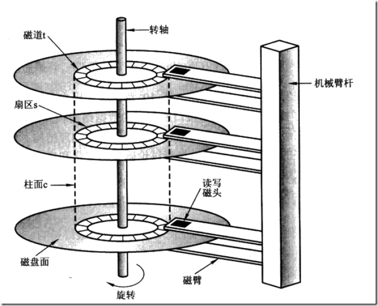
扇区（Sector）
In computer disk storage, a sector is a subdivision of a track on a magnetic disk or optical disc. For most disks, each sector stores a fixed amount of user-accessible data, traditionally 512 bytes for hard disk drives (HDDs) and 2048 bytes for CD-ROMs and DVD-ROMs. Newer HDDs and SSDs use 4096-byte (4 KiB) sectors, which are known as the Advanced Format (AF).
在计算机disk存储里，一个扇区是磁盘或光盘上一个磁道的小分区。对大多数disks来说，每个扇区存储固定量的数据，传统上hdd是512字节，CD和DVD是2048字节。新的hdd和ssd都用4K字节的扇区，即advanced format。
The sector is the minimum storage unit of a hard drive. Most disk partitioning schemes are designed to have files occupy an integral number of sectors regardless of the file's actual size. Files that do not fill a whole sector will have the remainder of their last sector filled with zeroes.
扇区是硬盘的最小存储单位，大多数磁盘的分区体系都被设计为不管文件的实际大小是多少，都让文件占据整数个分区。占不到一个扇区的那个零头（比如300Bytes）就把扇区剩下的部分用0填充。
Geometrically, the word sector means a portion of a disk between a center, two radii and a corresponding arc, which is shaped like a slice of a pie. Thus, the disk sector refers to the intersection of a track and geometrical sector.
几何学上所谓sector直译是扇形，指的是由盘的圆心、两个半径边、相应圆弧组成的部分（下图B）。因此磁盘里指的sector扇区实际上是几何学扇形和磁道track的交集（下图C）。
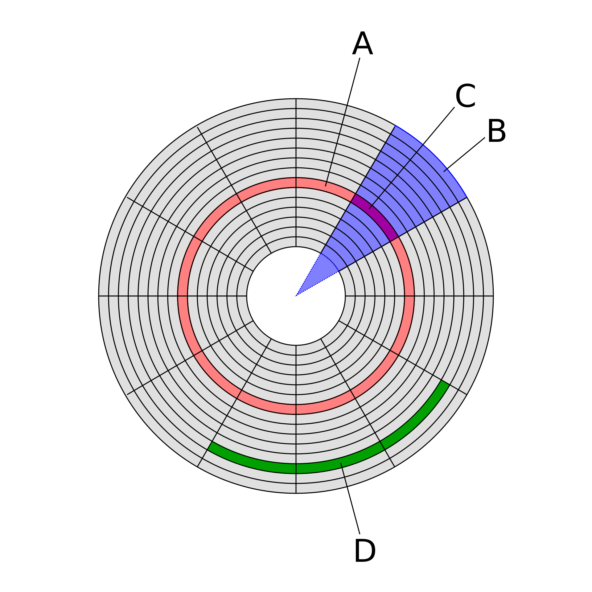
In modern disk drives, each physical sector is made up of two basic parts, the sector header area (typically called "ID") and the data area. The sector header contains information used by the drive and controller; this information includes sync bytes(that identifies the start of the sector, they merely indicate the start of the record.), address identification(sector number so the drive can know when it has found the start of a sector, and which sector it is), flaw flag and error detection and correction information. The header may also include an alternate address to be used if the data area is undependable. The address identification is used to ensure that the mechanics of the drive have positioned the read/write head over the correct location. The data area contains the sync bytes, user data and an error-correcting code (ECC) that is used to check and possibly correct errors that may have been introduced into the data.
现代磁盘驱动器的每个物理扇区都有两个基本部分，分别是扇区头和数据（见下图）。扇区头包括sync区（这块只用来指示扇区的开始）、地址ID（扇区号，通过这前两块，驱动器就能知道什么时候找到了一个扇区的起点及这块扇区是哪一块）、错误标记、错误检测校正信息（见我之前的文章）。扇区头可能包含一个替代地址以防数据区不可用。address identification地址ID是确保驱动器将读写头定位到了正确的区域。数据区包含sync bytes、用户数据和ecc码（见我之前的文章）)。
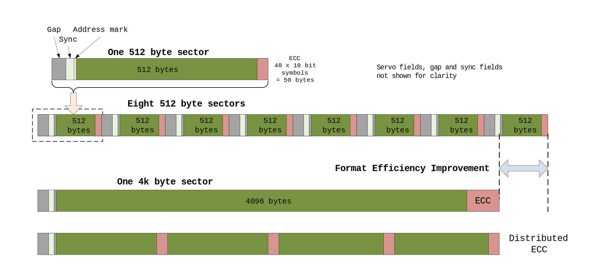
实际的扇区到底他妈长什么样？
上面的资料就能回答一个困扰我很久的问题，actuator到底是怎么让arm区分不同扇区的？并不是物理上有分隔，确实是囫囵铺了一整层永磁物质氧化铁，而是有sync（不知是否会跟data区冲突）标志。找某个扇区（MBR之类的）就是遍历然后找那个address ID符合的。
扇区间物理上没有任何分隔，只有逻辑上的分隔。
还有一点要注意的是，上面Disk structures图里的实际上是老磁盘驱动器的样子，盘片是个圆，那么越靠外的磁道或扇区就比中心的越大，这意味着靠外的空间利用率就更差（因为逻辑上每个扇区都只能存512B或4KB）。现代的每个扇区在物理上也是一样大小，so they each store the same number of bits per unit areaper单位区域存的数据量就一样了（如下图）。
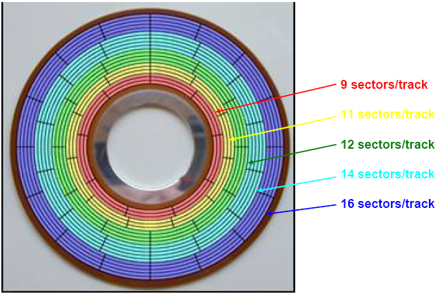
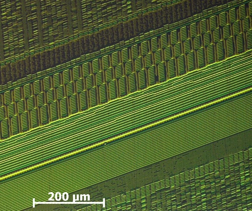
关于上面的问题，有个有趣的观点是磁盘变慢的原因之一是靠中心的磁道被占用，读写头要遍历的距离更长了。

磁头（Heads）
每个盘片都有两面，因此也会相对应每盘片有2个磁头。
執行器（英語：Actuators）又稱為促動器、致動器、操動件、執行機構、驅動器或驅動件，是一種將能源轉換成機械動能的裝置，並可藉由執行器來控制驅使物體進行各種預定動作。
In modern hard drives, the amount of space between the head and rotating platter at normal operating speed is typically less than 5 nanometers… this gap is also referred to as the flying height.
磁头跟盘片距离5nm，参照上面的DNA是2.5nm。
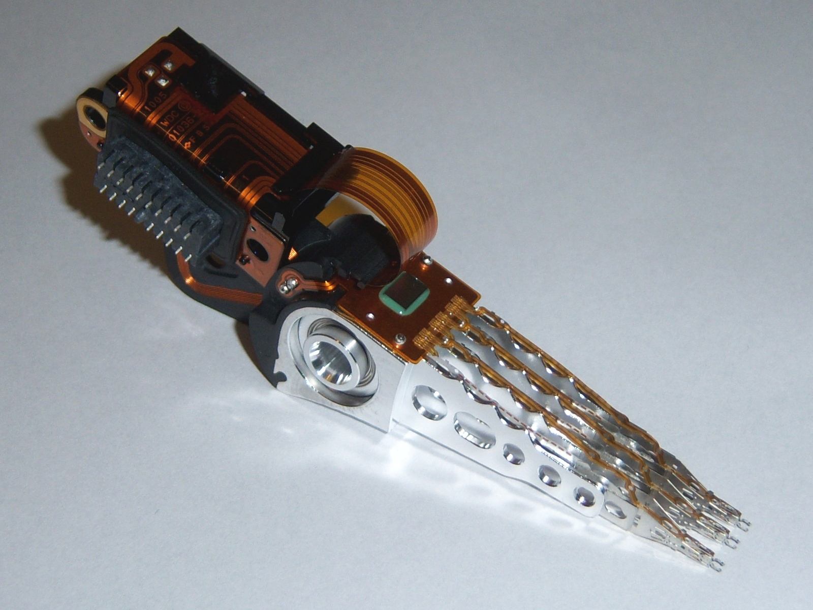
读写技术
A modern HDD records data by magnetizing a thin film of ferromagnetic material on both sides of a disk. Sequential changes in the direction of magnetization represent binary data bits. The data is read from the disk by detecting the transitions in magnetization. User data is encoded using an encoding scheme, such as run-length limited encoding, which determines how the data is represented by the magnetic transitions.
一个现代硬盘通过磁化盘片两面上的一小片铁磁性（强磁性，铁是强磁的）材料。用磁性方向的序列变化代表二进制位。读数据就是检测磁性的转变。用户数据用RLE等编码，这也决定了数据怎样被磁性的转变表达。
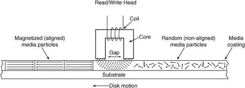
写数据
Longitudinal Magnetic Recording
根据上文物理原理，写数据的原理即用螺线管电生磁改变磁性材料的极性，
Reversing the current would polarize the magnetic material in the opposite direction.
通过改变电流方向以让盘片的磁性物质改为不同的极性，一种极性作为0，相反的极性就是1。
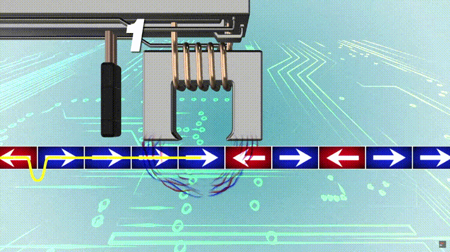
磁头就是个U型电磁铁，磁性最强处就是U型两个开口末端。
Perpendicular Magnetic Recording
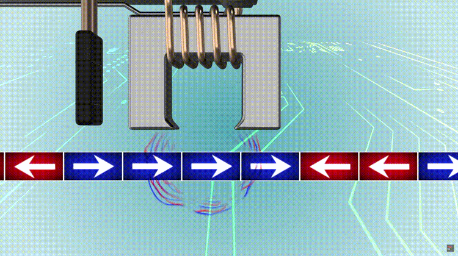
上面是LMR纵向磁性记录，PMR垂直磁性记录，只是改变了方向（扇区的极性从横变纵）。
读数据
上文写数据图中左边的黑色柱子是读取器，用来探测磁极性变化。
根据上文物理原理，导体周围在磁通量变化时会产生感应电动势，闭合回路内进而会出现感生电流。因此实际上感应电路在穿过扇区本身时不会有太大电流变化，只有在经过扇区交界时，磁场方向反转，磁通量产生较大变化，进而有电流变化（见下图，只有reverse时是有效读数据，中间的grain自然推得是0）。
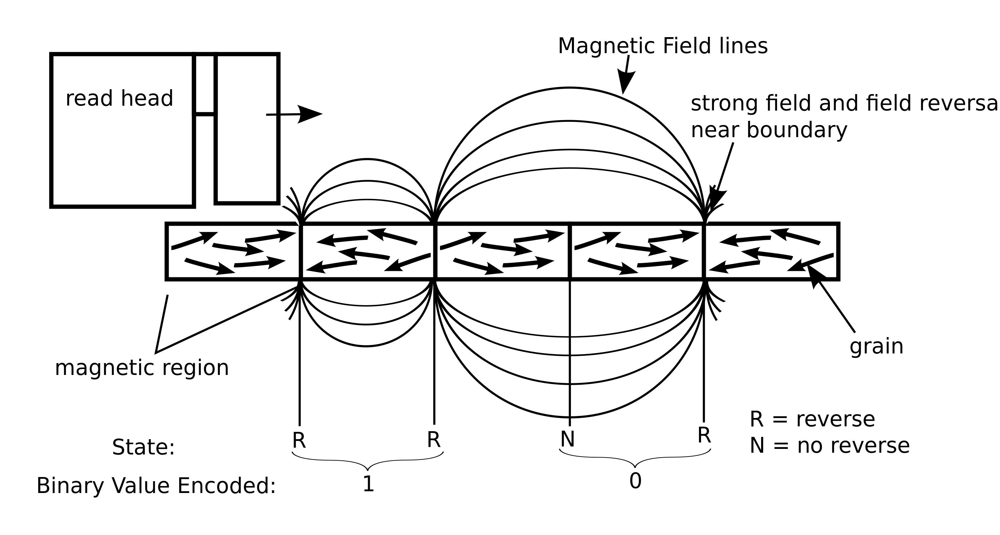
有外围电路与读取器相连，用来过滤噪音和放大感生电流。
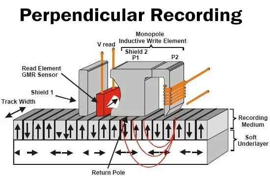
其实在扇区内而不是交界处，根据高电平还是低电平读取数据也是可以的，这部分这篇文章讲数字信号处理讲得多一点比如Non-return-to-zero方法。
run-length encoding
上文提到的编码手段中文是游程编码/运行长度编码，缩写RLE。
是一种与资料性质无关的无损数据压缩技术，基于“使用变动长度的码来取代连续重复出现的原始资料”来实现压缩。
伪代码，
input: AAABCCBCCCCAA
Q = input(0)
for i=1:size (input)
if(Q = input(i))
計數器+1
else
output的前項=計數器的值, output的下一項=Q值,
Q換成input(i)，計數器值換成0
end
end
output: 3A 1B 2C 1B 4C 2A(空格不存在)
寻道技术
before 1980s, CHS
Cylinder-Head-Sector，顾名思义，按柱面、磁头、扇区这个三维坐标定位扇区。
Head可以确定是disk中的哪一个盘片platter；Cylinder和Head可以共同确定是盘片上的哪一个磁道track；最后用Sector可以确定被定位的是哪一个数据块。This data block is an arc of (360/n) degrees, where n is the number of sectors in the track.
CHS addresses were exposed, instead of simple linear addresses (going from 0 to the total block count on disk - 1), because early hard drives didn't come with an embedded disk controller, that would hide the physical layout. A separate generic controller card was used, so that the operating system had to know the exact physical "geometry" of the specific drive attached to the controller, to correctly address data blocks. The traditional limits were 512 bytes/sector × 63 sectors/track × 255 heads (tracks/cylinder) × 1024 cylinders, resulting in a limit of 8032.5 MiB for the total capacity of a disk.
CHS的地址是暴露的（直球的），而不是简单的线性从0到盘片上的扇区数-1，因为早期硬盘没有能向操作系统隐藏磁盘物理结构的内置的disk控制器。那时用的是分开的通用控制卡，导致操作系统必须要精确地知道连在控制器上的盘的物理位置，才能正确定位数据块。传统上限是512 bytes/sector × 63 sectors/track × 255 heads (tracks/cylinder) × 1024 cylinders = 8032.5 MiB。
1980s ~ 1990s, CHS
As the geometry became more complicated (for example, with the introduction of zone bit recording) and drive sizes grew over time, the CHS addressing method became restrictive. Since the late 1980s, hard drives began shipping with an embedded disk controller that had good knowledge of the physical geometry. These logical CHS values would be translated by the controller, thus CHS addressing no longer corresponded to any physical attributes of the drive.
随着分区变得更复杂和磁盘容量增长，CHS定位就变得更局限。从1980年代末期开始开始内置磁盘控制器，其中有Head/Cylinder/Sector这些实际物理位置的信息。控制器会把物理地址翻译成逻辑地址（范围物理地址(0~c,0~h,0~s)→逻辑地址(0~c*h*s)），CHS定位为就再也不需要任何磁盘的相关物理属性。
For a single or double sided floppy disk track is the common term; and for more than two heads cylinder is the common term.
以下来自https://farseerfc.me/zhs/history-of-chs-addressing.html
在 IBM PC 上，驱动软盘和硬盘的是 CPU 执行位于主板 BIOS (Basic Input/Output System) 中的程序，具体来说操作系统（比如DOS）和应用程序调用 INT 13H 中断，通过 AH=02H/03H 选择读/写操作，BIOS 在中断表中注册的 13H 中断处理程序执行在 CPU 上完成读写请求。调用 INT 13H 读写扇区的时候，CPU 先通过 INT 13H AH=0CH 控制硬盘的磁头臂旋转到特定柱面上，然后选定具体磁头，让磁头保持在磁道上读数据， 通过忙轮训的方式等待要读写的扇区旋转到磁头下方，从而读到所需扇区的数据。在 DOS 之后的操作系统， 比如早期的 Windows 和 Linux 和 BSD 能以覆盖中断程序入口表的方式提供升级版本的这些操作替代 BIOS 的程序。
after 1990s, LBA
Logical Block Addressing
$$ \begin{equation} LBA 地址 = ( C \times 磁头数 + H ) \times 扇区数 + ( S - 1 ) \end{equation}
$$
where A is the LBA address, Nheads is the number of heads on the disk, Nsectors is the maximum number of sectors per track, and (c, h, s) is the CHS address.
For example, for geometry 1020 16 63 of a disk with 1028160 sectors, CHS 3 2 1 is LBA 3150 = ((3 × 16) + 2) × 63 + (1 – 1);
By the mid 1990s, hard drive interfaces replaced the CHS scheme with logical block addressing (LBA), but many tools for manipulating the master boot record (MBR) partition table still aligned partitions to cylinder boundaries; thus, artifacts of CHS addressing were still seen in partitioning software by the late 2000s.
1990年代中期，LBA取代了CHS定位，但很多操作master boot record (MBR)分区表的工具还在用CHS，所以知道2000年代末期还可以见到。
In the early 2010s, the disk size limitations imposed by MBR became problematic and the GUID Partition Table (GPT) was designed as a replacement; modern computers using UEFI firmware without MBR support no longer use any notions from CHS addressing.
2010年代早期，由于MBR对磁盘容量的限制，其被GUID Partition Table (GPT)取代，现代使用UEFI固件但不支持MBR的电脑都不再使用CHS定位的任何概念。
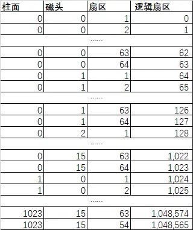
relative sector addressing
used in DOS
分类
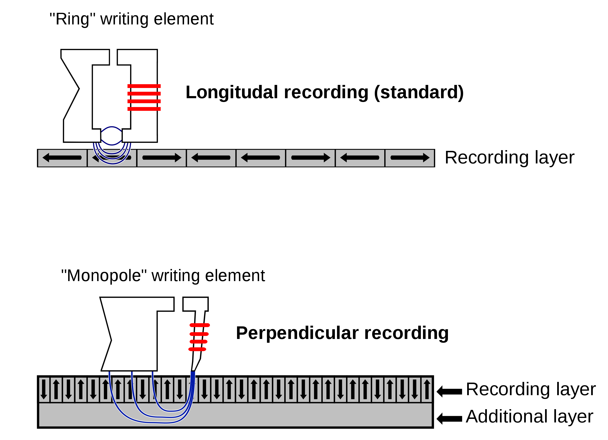
CMR（Conventional Magnetic Recording，傳統磁性記錄）包括LMR（Longitudinal Magnetic Recording，縱向磁記錄）和PMR（Perpendicular Magnetic Recording，垂直磁記錄）
PMR提升了LMR的存储密度，SMR（Shingled Magnetic Recording，疊瓦式磁記錄）可以进一步提升存储密度。
参见上文这里和那里的图，写头总是比读头要大一些（均已经缩小至物理极限），这就导致磁道tracks之间总有一条是利用不到的，参见下两图
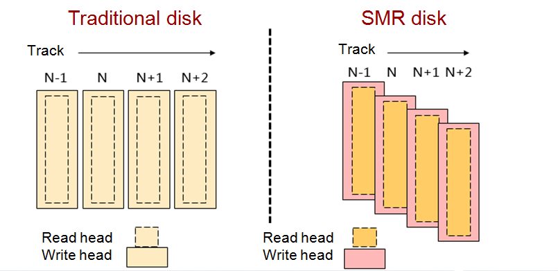
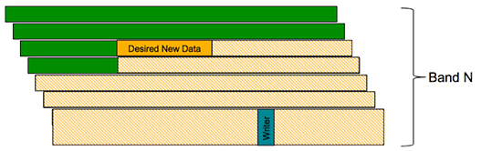
SMR的做法是像我之前文章里写到的仰合瓦屋顶那样把磁道像板瓦一样堆叠起来，
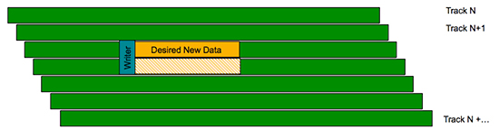
让板瓦（磁道）没被覆盖到的部分刚好等于读头的宽度。
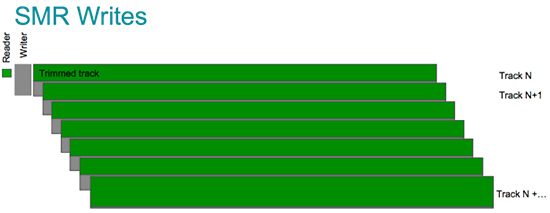
不过这样的缺点也明显很严重——数据只能循序(sequential)写入，不能随机(random)写入，否则会覆盖其他数据；而且如果要修改某块数据，就需要一直修改整片磁道。折中方案是把连续的磁道组成Band/Zone，区域的最后一条按PMR写入不做重叠，读写数据都以这个Band/Zone为单位（见下图）。
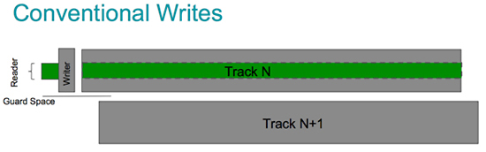
由于修改数据的开销太高，SMR比较适合数据归档之类长期不变的用途。